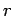

Nächste Seite: Kontrollpartikel Aufwärts: Implizite Raumpartitionierung Vorherige Seite: Exkurs: Inhalt

ist. Das heißt, es muss der Abstand zu dem wie eben beschrieben gefundenen Partikel gemessen werden. Ist dieser kleiner als , so wird Flüssigkeitsphysik wie in Kapitel 2 beschrieben angewendet.